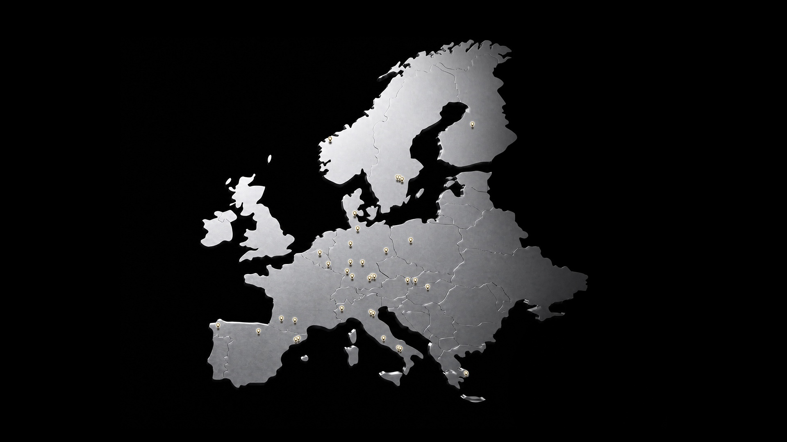

NVIDIA Europe: 35 supercalculateurs IA renforcent la souveraineté de calcul
L'annonce officielle NVIDIA du 22 juin 2026 à ISC 2026 montre une accélération nette de la capacité IA européenne: 35 nouveaux systèmes et centres annoncés, avec des usages qui couvrent la recherche, l'industrie, la santé, le climat et les administrations.

1. Ce qui est annoncé
NVIDIA présente une vague européenne de supercalculateurs et d'infrastructures IA, dont JUPITER, présenté comme premier système exascale d'Europe, ainsi que des déploiements en Allemagne, au Royaume-Uni, en France, en Italie, en Finlande, en Suède, en Norvège, en Suisse et en Espagne. L'annonce met aussi en avant l'usage des plateformes NVIDIA Grace Hopper, Blackwell et des logiciels associés pour rendre ces capacités exploitables par la recherche et l'industrie.
Le message opérationnel est clair: l'Europe cherche à transformer la puissance de calcul en capacité d'innovation locale. Les workloads visés ne sont pas seulement des modèles génériques, mais aussi la simulation scientifique, la découverte de médicaments, la météo, le climat, la robotique, les jumeaux numériques et les applications industrielles critiques.
2. Pourquoi c'est un signal de souveraineté IA
La souveraineté IA dépend de la disponibilité de compute local, mais aussi de la capacité à l'allouer aux bons acteurs et à l'exploiter dans des environnements gouvernés. Les 35 systèmes annoncés renforcent donc une couche stratégique: la possibilité de faire tourner des modèles, simulations et pipelines sensibles sans dépendre uniquement d'une capacité hors Europe.
Pour la Belgique et la France, le point à suivre est la connexion entre ces infrastructures et les besoins des entreprises. Une capacité souveraine n'a d'impact que si les organisations peuvent y accéder avec des règles claires: sécurité, coûts, confidentialité, portabilité des modèles et preuves de conformité.
3. Lecture pour les entreprises et Odoo Entreprise
Les directions IT peuvent utiliser cette actualité comme rappel: les projets IA sensibles doivent être pensés avec une trajectoire de calcul. Un assistant interne, un moteur RAG, un agent Odoo Entreprise ou un modèle métier spécialisé n'ont pas les mêmes exigences de confidentialité, de latence, de coût et de réversibilité.
La bonne question n'est pas seulement "quel modèle utiliser ?", mais "où ce modèle peut-il être entraîné, adapté, journalisé, audité et remplacé ?". Les supercalculateurs IA européens augmentent les options, mais ils imposent aussi une discipline d'architecture pour relier données, modèles, intégration métier et exploitation.
Cartographier vos workloads IA par criticité et préparer une trajectoire compute: cloud, hybride, souverain ou capacité spécialisée selon les risques.
Cadrer une trajectoire IA souveraine